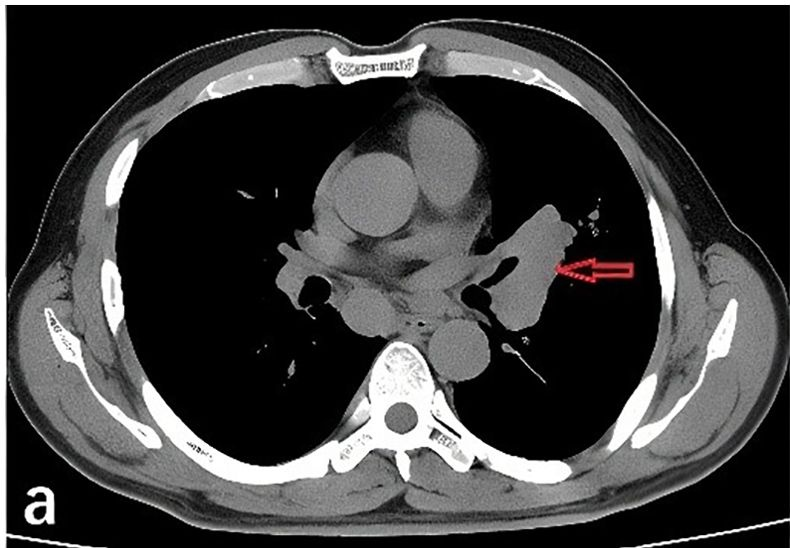

PÁGINA 6 · RECONHECIMENTO CLÍNICO + DISCRIMINADOR
Proximal, CaPC e a pupila que delata
Ptose pode ser nas duas. A pupila não. O discriminador de ouro é a musculatura ocular intrínseca — território do SNA, que o LEMS vaza para fora da placa e a MG típica não.
Comparativo LEMS × MG com foco em pupila e SNA.
Como ler o dual
Painel esquerdo: LEMS com canais Ca²⁺ bloqueados por anti-VGCC no terminal pré; o chip ~50% CaPC ancora a associação neoplásica #1. Painel direito: MG com dobras pós-sinápticas simplificadas e AChR destruídos. O chip pupila/SNA abaixo de cada painel mostra que só o LEMS vaza para a musculatura ocular intrínseca.

Li X, Xu T, Jian X · Front Oncol 2025 · CC BY 4.0 · DOI 10.3389/fonc.2025.1558986 · Fig. 1(a) · PMC12464491
Onde olhar nesta TC
A seta aponta a massa hilar esquerda (~6 cm) com linfadenopatia hilar e mediastinal. O motivo CaPC da fraqueza é este: no LEMS, o tórax é sobre o câncer de pulmão de pequenas células — distinto do DPI do Jo-1 (outro motivo de tórax, outro andar).
Paraneoplasia
LEMS associa-se a neoplasia em cerca de 50% dos casos — síndrome paraneoplásica frequente. O câncer mais comum é o câncer de pulmão de pequenas células (CaPC / SCLC). No mapa de tórax da fraqueza, este é o motivo CaPC (distinto do motivo DPI do Jo-1).
Clínica nuclear
Fraqueza + facilitação. Facilitação = ganho de força inicial com o movimento — oposto da fatigabilidade. Topografia grande: fraqueza proximal e simétrica de membros. Face pode ser afetada; ptose pode ocorrer, como na miastenia.
Desautonomia
LEMS também pode fazer desautonomias / disautonomia.
Extrínseca × intrínseca — a pegadinha
Musculatura ocular extrínseca (pálpebra e movimento ocular): LEMS e miastenia podem afetar. Musculatura ocular intrínseca (pupila) é controlada pelo sistema nervoso autônomo (simpático e parassimpático). Miastenia gravis não mexe com o SNA / pupila; LEMS mexe.
Pulo do gato topográfico
A miastenia é doença da placa na porção muscular (receptores de ACh no músculo). O LEMS é doença da placa na porção axonial (neurônio liberador — canais de Ca no terminal). Neurônio colinérgico não existe só na junção neuromuscular — também no sistema nervoso autônomo. Ao afetar a liberação colinérgica no axônio, o LEMS compromete vias parassimpáticas (em destaque) e componentes simpáticos que dependem de ACh — daí a desautonomia e a alteração pupilar/intrínseca. Na MG (alvo no músculo), não.
Não confunda
| Eixo | MG | LEMS |
|---|---|---|
| Tórax clássico | timo (faixa MG) | CaPC (~50% neoplasia) |
| Curso da força | fatigabilidade | facilitação inicial |
| Pupila / SNA | não | sim |
Quiz
Q1. Neoplasia mais comum associada ao LEMS:
Gabarito: B. ~50% dos LEMS com neoplasia; CaPC é o #1.
(A) associa-se ao eixo de MG/timo, não ao #1 do LEMS (CaPC/SCLC). (C) (D) fora do núcleo.
Por que cair na A: contaminação com o tórax da miastenia.
Quiz
Q2. Sobre olho e SNA:
Gabarito: B. Ptose/extrínseca não discriminam; pupila/SNA puxa LEMS.
(A) inverte. (C) falso (ptose pode). (D) troca de doença.
Por que cair na A: memorizar “olho = MG” sem fatiar extrínseca×intrínseca.
Quiz
Q3. Por que o LEMS “entra” no SNA e a MG típica não?
Gabarito: B. Sítio pré/axonal + colateral colinérgica autonômica → disautonomia/pupila.
(A) EM/outro. (C) inverte alvos. (D) confunde associações.
Por que cair na D: misturar paraneoplasia do LEMS com a biologia da MG.